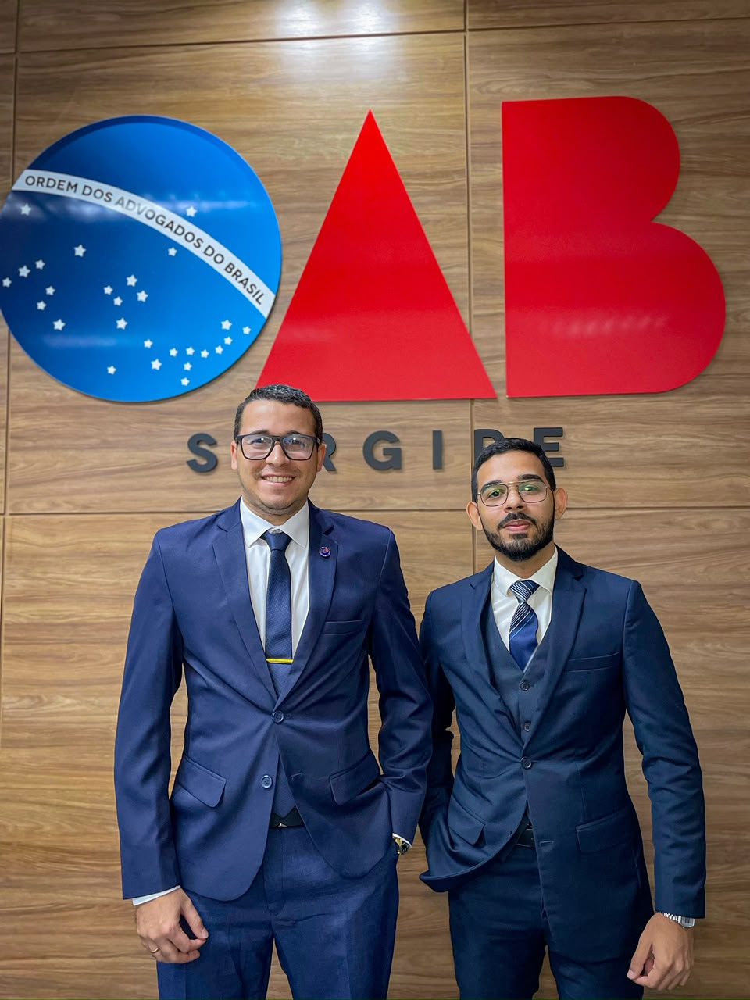

A união de especialização acadêmica e atuação combativa. Soluções jurídicas seguras em Direito Trabalhista, Previdenciário, Cível e Empresarial, com atendimento presencial em Salgado/SE e 100% digital em todo o Brasil.

O escritório Junio & Ribeiro Advocacia e Consultoria Jurídica atua com um propósito claro: oferecer advocacia de alta precisão técnica aliada ao atendimento direto, próximo e acessível ao cliente.
Fundada pelos advogados Dr. Renan Ribeiro Lima e Dr. Evandro Junio Xavier de Oliveira, a banca conjuga profunda fundamentação doutrinária com uma postura prática e diligente nos tribunais, assegurando que cada direito seja defendido com rigor.
Explicamos cada fase do seu processo com clareza, para você ter total tranquilidade.
Compromisso irrestrito na busca do melhor desfecho em vias judiciais e extrajudiciais.
Profissionais dedicados ao estudo constante e à defesa incansável dos direitos de cada constituinte.
Com sólida formação jurídica e atuação combativa, dedica-se à proteção técnica dos direitos com precisão estratégica e atendimento humanizado.
Atuação combativa com foco na defesa das garantias fundamentais do cidadão e na segurança jurídica empresarial e cível, conduzindo processos com serenidade, método e vigor institucional.
Atendimento multidisciplinar estruturado para responder às demandas jurídicas de pessoas físicas e empresas com rigor técnico e resolutividade.
Blindagem preventiva e consultoria estratégica para micro, médias e grandes empresas crescerem com segurança jurídica.
Proteção patrimonial, indenizações por danos morais e materiais, resolução de conflitos contratuais e cobranças judiciais.
Garantia da titularidade legal de imóveis urbanos e rurais, resolução de pendências cartorárias e segurança patrimonial.
Condução humanizada e reservada para momentos delicados que envolvem vínculos familiares e partilha de bens.
Defesa técnica combativa com garantia irrestrita dos direitos constitucionais, ampla defesa e contraditório.
Atuação especializada contra arbitrariedades administrativas, suspensão de CNH e penalidades indevidas dos órgãos de trânsito.
Planejamento previdenciário e requerimento de benefícios junto ao INSS, buscando o melhor valor de aposentadoria e o cumprimento estrito da lei.
Recuperação de tributos pagos indevidamente, defesas em execuções fiscais e planejamento para redução lícita da carga tributária.
Defesa completa dos direitos do trabalhador e consultoria preventiva para empregadores, com análise minuciosa de contratos e verbas rescisórias.
Entendemos que cada processo envolve a vida, a família ou o patrimônio do constituinte. Nosso método prioriza respeito, presteza e resultados.
Seu caso não é repassado para estagiários anônimos. A estratégia é desenhada e conduzida diretamente pelos advogados fundadores.
Você não precisa ficar semanas aguardando respostas. Mantemos você ciente de cada movimentação do processo pelo WhatsApp.
Escritório com estrutura física acolhedora em Salgado/SE e processos eletrônicos que permitem defender seus direitos em qualquer estado do país.
Pós-graduação e constante atualização técnica para identificar teses vencedoras e precedentes favoráveis aos nossos clientes.
Um processo simples, ágil e descomplicado para você obter orientação jurídica segura.
Clique no botão do WhatsApp e conte resumidamente a sua situação ou dúvida para o advogado de sua preferência.
Avaliamos seus documentos e a viabilidade jurídica da demanda de forma transparente, apontando as possibilidades reais.
Iniciamos as providências judiciais ou extrajudiciais com total zelo e mantemos você informado em cada etapa processual.
Respostas claras para as principais dúvidas sobre nossa forma de trabalho e contratação.
Atendimento presencial com agendamento prévio em Salgado/SE, e atendimento digital para todo o Brasil.
Av. Gov. João Alves Filho, nº 413, Sala 2
Galeria Exclusivo Center, Centro
Salgado/SE — CEP: 49390-000
Segunda a Sexta: 08h às 17h
(Atendimento com agendamento prévio)
Plantão de consultoria em todo o território brasileiro via WhatsApp e PJe
Selecione com quem deseja conversar para iniciar seu atendimento imediatamente.
OAB/SE · Especialista FMP (Trabalhista & Previdenciário)
OAB/SE · Sócio Fundador (Cível, Criminal & Trânsito)